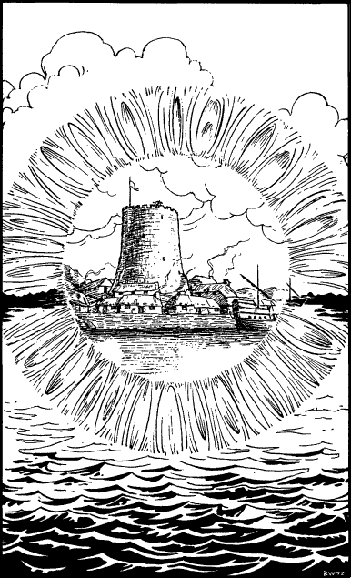

140
With your briefing now concluded, King Sarnac ushers you all into his court chamber. There you bid him, Lord Ardan, and Guildmaster Banedon farewell, and they in turn wish you good luck and godspeed before Captain Prarg escorts you to the harbour. It is snowing heavily, and few of Vadera’s inhabitants notice as the two of you are welcomed aboard the Maycastle, the square-rigged man-o’-war which will carry you to Azgad Island.
You leave Vadera within the hour and begin the long, cold voyage northwards. During the voyage, Captain Prarg tells you about the raids which have destroyed several small Drakkarim settlements along the Gulf of Konkor and the coast of the Shakoz Bight. On the twelfth day of your two-week sea journey, you catch a glimpse of one such settlement, near to the mouth of the River Lenag. All that remains is a wispy pall of smoke which hangs above the burnt-out hovels, darkening an already stormy sky.
For most of the voyage, a host of seabirds have accompanied the Maycastle, attracted by the scraps of food regularly thrown out by the ship’s galley. But at dawn on the thirteenth day, as the ship enters the Gulf of Konkor, the usual flocks of shrieking gulls are nowhere to be seen. It is as if they have suddenly become aware of impending danger and have turned back, eager to stay out of harm’s reach. Later in the day, a fierce squall arises from the east which whips the iron-grey waters of the gulf into a maelstrom. The crew fight desperately to control their ship as the storm rages all day and all night, not abating until dawn of the following day. As the wind gradually dies and the sea settles, the lookout is able to resume his post atop the mainmast.

‘Land ahoy!’ he cries, and all eyes scan the northern vista. There, perched on the wintry horizon, is a grey strip of barren, frost-covered rock. You magnify your vision and see, on the western side of this island, a few slate buildings clustered around a fortified stone tower.
‘That’s Fort Azgad,’ says Captain Prarg, with relief in his voice. ‘At last we’ve arrived.’